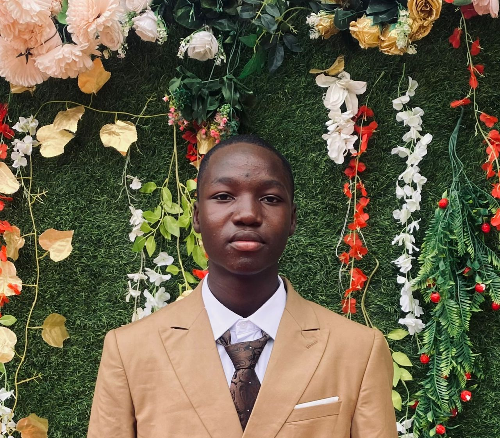

My Name is BELLO ABDULBASIT OKIKIOLA ,buh people called me Mr B and i'm cool with it, i mean it's not a bad nickname though sheh you get.and I am a student. When people ask me to describe myself, I often pause because I believe a person is more than just a name, age, or occupation. I am a combination of my experiences, my values, my dreams, and the people around me. Writing about myself gives me the opportunity to reflect on who I am today and who I am working to become tomorrow.Education and Love for Learning
First and foremost, I am a student. Education is very important to me because I see it as the foundation for everything I want to achieve in life. In school, I have found that I am most drawn to subjects that challenge my mind. My favorite subject is Mathematics.Mathematics is not just about numbers for me. It is about logic, patterns, and problem-solving. I enjoy the process of breaking a big problem into smaller parts and finding a solution step by step. When I finally solve a difficult question, it gives me a sense of accomplishment that motivates me to keep going. Mathematics has taught me patience and persistence. It has shown me that with focus and practice, even the hardest problems can be solved. I believe these same skills will help me in every area of my life, especially in business and technology.
Hobbies: Football and Efootball
Outside of academics, I believe in having a balanced life. One of my greatest passions is football. Football is more than just a sport to me. When I play, I feel free, energized, and connected to my teammates. Football has taught me discipline, teamwork, and resilience. On the field, you learn to communicate, to trust others, and to take responsibility for your role. You also learn how to win with humility and how to lose with grace. These are lessons that go far beyond the pitch and into real life.In addition to playing real football, I am also a big fan of video games, especially Efootball. Efootball allows me to combine my love for football with technology. It is a game of strategy, timing, and quick decision-making. I enjoy building my team, creating tactics, and competing. Playing Efootball helps me relax and unwind after studying. It also sharpens my reflexes and my ability to think under pressure. For me, gaming is not a waste of time — it is another way to develop focus and competitive spirit.
Food, Culture, and Music
Food is another important part of my life. I am proud of Nigerian cuisine, and my favorites are Jollof rice and fried rice with chicken. There is something special about the smell of Jollof cooking that can instantly make me feel at home. To me, food is not just about eating. It is about culture, family, and celebration. Sharing a plate of Jollof or fried rice with friends brings people together and creates memories.Music is also a huge part of who I am. I use music to set the tone for my day. When I am working, studying, or need to concentrate, I listen to godly songs. The messages in gospel music keep me grounded. They remind me of my faith, my purpose, and that I am not alone in my journey. The lyrics encourage me to stay disciplined and to trust the process.
When I want to relax or feel inspired, I listen to Fela Kuti. Fela’s music is powerful. It is full of energy, rhythm, and meaning. Listening to Fela makes me proud of African culture. His creativity and boldness inspire me to think differently and to be confident in expressing myself. Music, for me, is fuel. It motivates me when I am tired and it keeps me going when things get tough.
My Vision for the Future
Looking to the future, I have clear goals. My overall aim is to become a successful man. To me, success is not just about money. Success means being independent, adding value to people’s lives, and leaving a positive impact. I have three main career goals: to become a Forex trader, a web developer, and a businessman. I am interested in Forex trading because I want to understand how the global economy works. Money moves the world, and I want to learn how to analyze markets, manage risk, and make smart financial decisions. Forex trading teaches patience, emotional control, and strategy. I believe that mastering financial intelligence will give me the freedom to build the life I want.I also want to be a web developer. I am fascinated by technology and how it is changing the world. The idea that I can sit at my computer and build a website or application that people all over the world can use is amazing to me. Web development combines creativity with problem-solving. It allows me to bring ideas to life and to solve real problems for people and businesses. As the world becomes more digital, I want to be someone who is building the future, not just watching it.
Finally, I want to be a businessman. Entrepreneurship is in my heart. I want to create something of my own — a business that solves problems, creates jobs, and grows over.
FIRST WEEK @SQI
Offcourse It's my first day at SQI today 9th of september 2026, buh not actually my first day though,
becuase i
have been here before like some (6 years) back then. And I known you people will be eager
to known how it went,
right?!. Buh to be sincere it's was interesting, buh there's a hook, i got theier late on my first day.I
mean it
wasn't
intentional
though,i follow the wrong time schedule and that's why, it wasn't intentional!!!!!!
Okay...........
So.......i known you people will be eager to known what i went there to stdy right?. so far so good i
will
be studying WEB DEVELOPMENT there.
So.........................I'M A WEB DEVELOPER and you?
And to be honest guys, this course is hysterially wide, confusing and convincing at the same time and off course interestig. And of (this week), we didn't study much you know as a beginner they can't be rushing things for us you know, that kind thing.
THINGS WE LEARNT @SQI THIS WEEK
- First on the list is how to use HTML code, i would have shown you buh that's what i'm using to express my self. so there's no need for that.
- How to upload an image to a web, and here is one
- Next should be how to upload video
- And maybe lastly should be how to play an audio in the web. Here's is a coded audio that allows audio plays on web;
My wallpaper
.png)
My Video
My Audio
So far so good this is all i have for you today at my first week at SQI, may so we shall have good time together FAM.